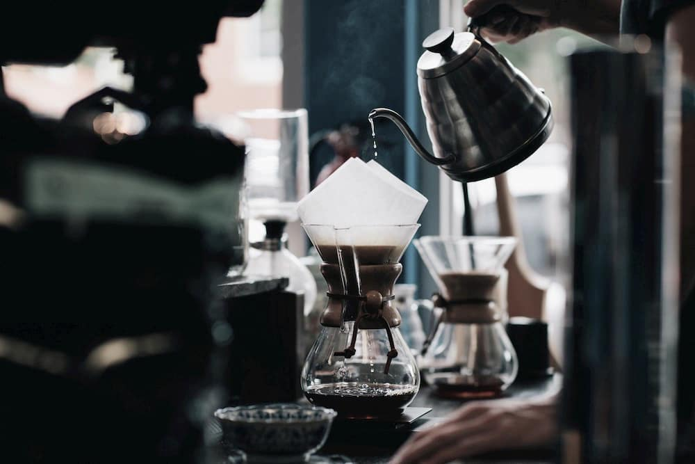

Brewed coffee is made by pouring hot water onto ground coffee beans, then allowing to brew. There are several methods for doing this, including using a filter, a percolator, and a French press. Terms used for the resulting coffee often reflect the method used, such as drip......
